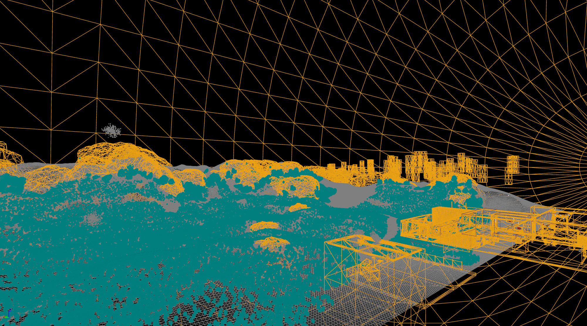

Media


Overview
Four Lights is a group-developed game prototype created using Unreal Engine and built for deployment on the PlayStation 5 development kit. The game features light environmental storytelling, a few simple puzzles, and mechanics that facilitate the solving of those puzzles in a minimalist, immersive space.
Design Focus
The project emphasizes deliberate simplicity in level design to support low-FPS puzzle rooms, while reserving high detail and graphical fidelity for exterior sequences. These spaces were crafted to push the visual capabilities of the PS5 and create a strong sense of atmosphere. The visual style leans into liminal, dreamlike spaces and uses lighting to reinforce mood and contrast.
Development Media

Collaboration & Tools
- Built in Unreal Engine 5
- Configured and managed a Perforce source control server for team collaboration
- Coordinated submission process across team members working remotely